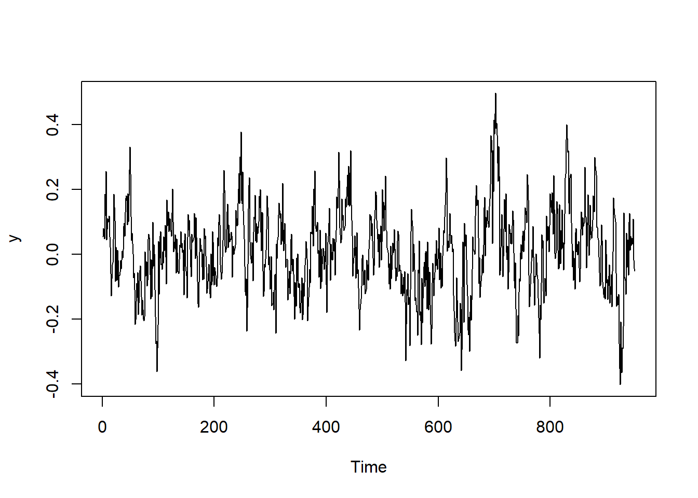
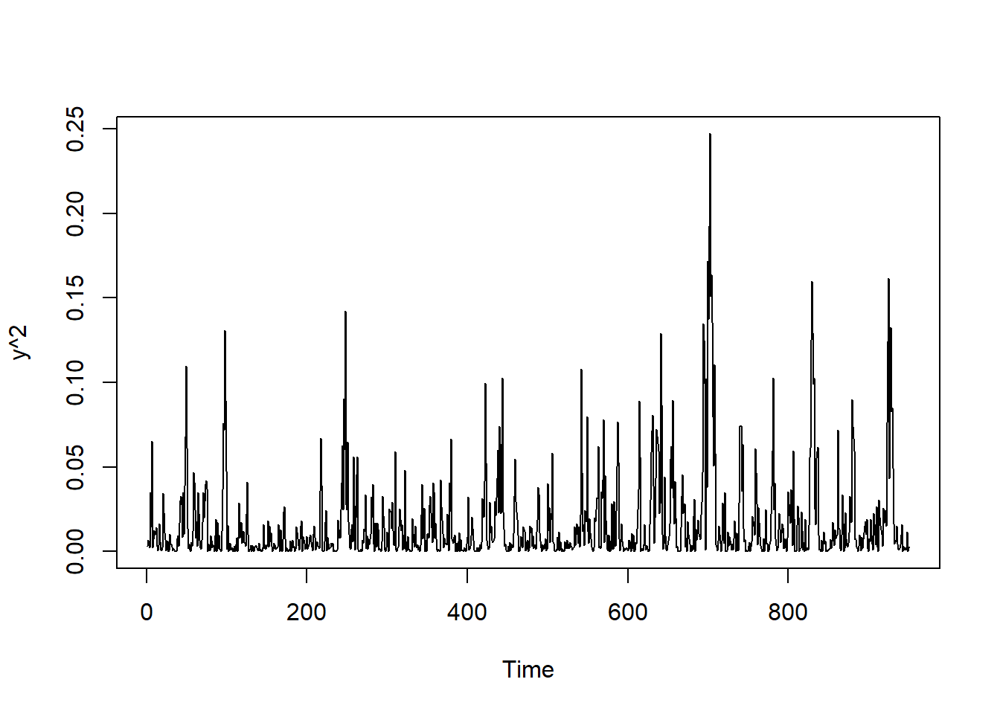
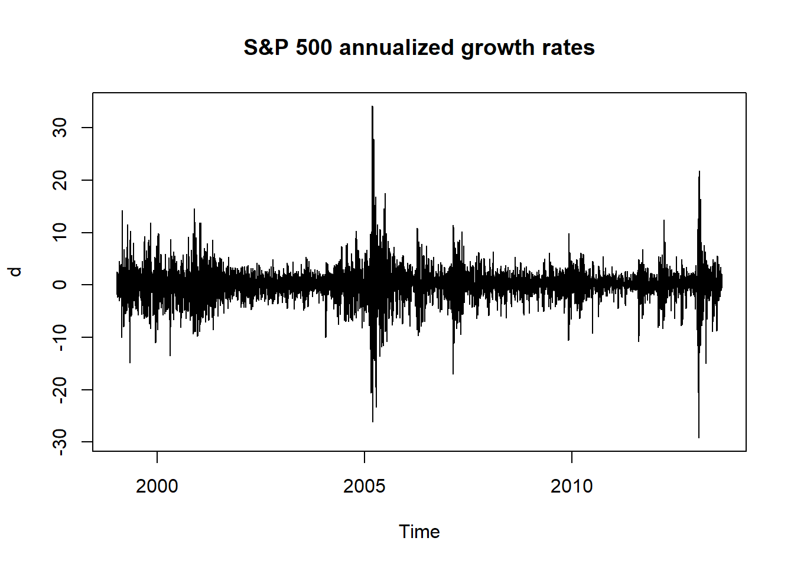
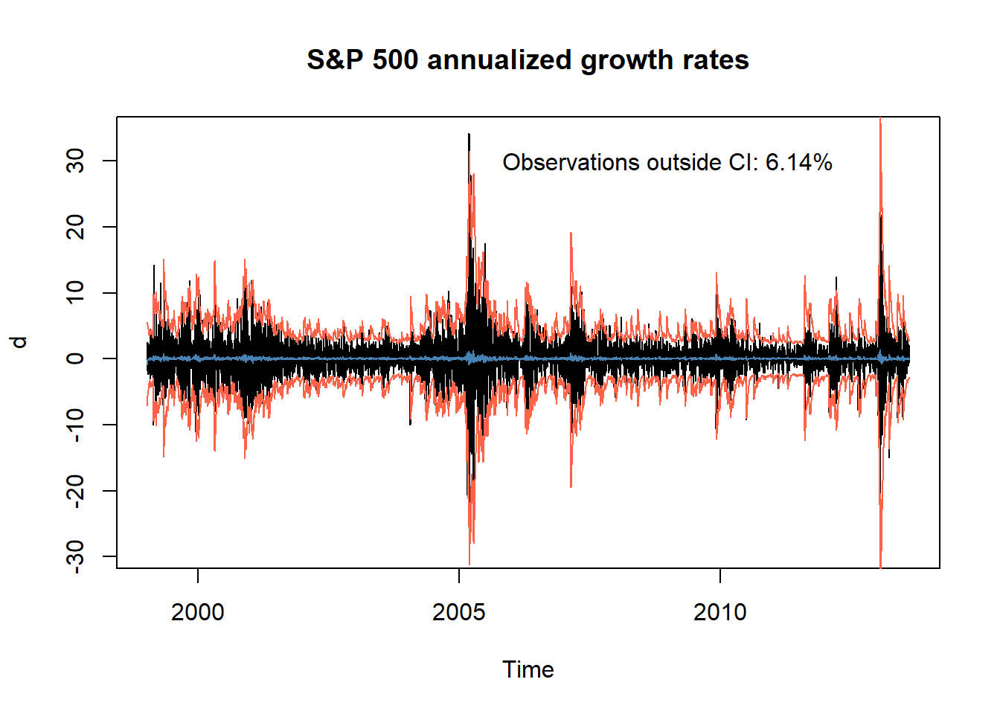

Session 7 Volatility modeling in practice
7.1 The ARMA(1,1)-TGARCH(1,1) model
In this session we include the conditionally-heteroskedastic models into the ARMA framework. In particular, we consider an ARMA(1,1) model with conditionally-heteroskedastic innovations and asymmetric effects. For simplicity, we just consider first-order difference equations, but the model can be generalized to include more lags. The model is an ARMA(1,1)-TGARCH(1,1) of the following form:
\[ \begin{aligned} y_t &= c + \phi y_{t-1} + \theta \varepsilon_{t-1} + \varepsilon_t \\ \varepsilon_t &= \sigma_t z_t \\ \sigma^2_t &= \omega + \alpha y_{t-1}^2 + \beta \sigma^2_{t-1} + \gamma y_{t-1}^2 \mathbb{1}_{y_{t-1}<0} \end{aligned} \]
Throughout this session, we consider \(z_t \sim \mathcal{N}(0,1)\) and we estimate the model via maximum-likelihood. Let \(I_t = \{y_1, \dots, y_t, \varepsilon_1, \dots, \varepsilon_t, \sigma_1, \dots, \sigma_t\}\). The log-likelihood of the model is:
\[ \ell(\theta; I_T) = -\frac{T-1}{2} \log(2\pi) - \frac{1}{2}\sum_{t=2}^T \log \sigma_t(I_{t-1}; \theta) - \frac{1}{2}\sum_{t=2}^T \frac{( \varepsilon_t(I_{t-1}; \theta))^2}{\sigma^2_t(I_{t-1}; \theta)}, \]
where expressions for \(\sigma_t(I_{t-1}; \theta), \ \varepsilon_t(I_{t-1}; \theta)\) can be found using a standard filtering procedure (Exercise 3).
## Simulate data from ARMA(1,1)-TGARCH(1,1) process
# set parameters
t_max <- 1000
c <- 0
phi <- 0.85
theta <- -0.1
omega <- 0.01
alpha <- 0.1
beta <- 0.85
gamma <- 0.05
# simulate
set.seed(123)
z <- rnorm(t_max)
epsilon <- c(0, rep(NA, t_max))
sigma2 <- c(1, rep(NA, t_max))
y <- c(sigma2[1]*z[1], rep(NA, t_max))
for (t in 2:(t_max+1)) {
set.seed(t*212) # for reproducibility
# sigma2[t] <- omega + alpha*y[t-1]^2 + beta*sigma2[t-1] + gamma*y[t-1]^2 + gamma*y[t-1]^2*(y[t-1]<0)
sigma2[t] <- omega + alpha*y[t-1]^2 + beta*sigma2[t-1] + gamma*y[t-1]^2*(y[t-1]<0)
epsilon[t] <- sigma2[t]*z[t]
y[t] <- c + phi*y[t-1] + theta*epsilon[t-1] + epsilon[t]
}
y <- y[50:t_max]

## filter
arma11tgarch11_filter <- function(y, params){
# initializations
c <- params[1]
phi <- params[2]
theta <- params[3]
omega <- params[4]
alpha <- params[5]
beta <- params[6]
gamma <- params[7]
t_max <- length(y)
eps <- c(0, rep(NA, t_max-1))
sig2 <- c(1, rep(NA, t_max-1))
z <- rep(NA, t_max)
loglik <- 0
sig2[1] <- var(y)
z[1] <- y[1]/sqrt(sig2[1])
# for loop calculating one-step-ahead
for (t in 2:t_max){
eps[t] <- y[t] - c - phi*y[t-1] - theta*eps[t-1]
sig2[t] <- omega + alpha*y[t-1]^2 + beta*sig2[t-1] + gamma*y[t-1]^2*(y[t-1]<0)
z[t] <- eps[t]/sqrt(sig2[t])
}
# loglik
loglik <- - sum(log(sig2[2:t_max])) - sum(eps[2:t_max]^2/sig2[2:t_max]) # *0.5 + constant terms
# output
return(list(sig2 = sig2,
eps = eps,
z = z,
loglik = loglik))
}## likelihood
arma11tgarch11_objective <- function(y, params) {
#initializations
c <- params[1]
phi <- params[2]
theta <- params[3]
omega <- params[4]
alpha <- params[5]
beta <- params[6]
gamma <- params[7]
t_max <- length(y)
res_filter <- arma11tgarch11_filter(y, params)
sig2 <- res_filter$sig2
eps <- res_filter$eps
# if-else statement calculating negative loglik
# if (all(is.finite(params)) & omega>=0 & alpha>0 & beta>0 & gamma>0 & (alpha+beta+gamma/2)<1) {
if (all(is.finite(params)) & (alpha+beta+gamma/2)<1) {
neg_loglik <- -res_filter$loglik
} else {
neg_loglik <- Inf
}
return(neg_loglik)
}## MLE
arma11tgarch11_mle <- function(y, params) {
# nlminb function optimizing parameters
fit <- nlminb(start = params, objective = arma11tgarch11_objective,
y = y,
lower = c(-1, -0.999, -0.999, -1, 0.01, 0.01, 0.001),
upper = c( 1, 0.999, 0.999, 1, 0.9, 0.9, 0.9))
## output
names(fit$par) <- c("c", "phi", "theta", "omega", "alpha", "beta", "gamma")
fit$par
}tab <- cbind(MLE = mle,
true = c(c, phi, theta, omega, alpha, beta, gamma))
row.names(tab) <- c("c", "phi", "theta", "omega", "alpha", "beta", "gamma")
round(tab, 3)## MLE true
## c 0.001 0.00
## phi 0.831 0.85
## theta -0.119 -0.10
## omega 0.001 0.01
## alpha 0.028 0.10
## beta 0.736 0.85
## gamma 0.009 0.057.2 Modeling the S&P 500 volatility
We now show an application of the ARMA(1,1)-TGARCH(1,1) model to the S&P 500 historical data.
## Load data
sp500 <- read.csv("../data/sp500.csv")
sp500 <- ts(sp500$adjusted_close[nrow(sp500):1], start = c(1999, 11, 1), freq = 365)
d <- diff(log(sp500))*252
plot.ts(d, main = "S&P 500 annualized growth rates")
## c phi theta omega alpha beta
## 0.03314379 0.49055508 -0.53153704 0.16230434 0.01000000 0.87320296
## gamma
## 0.19467830## plot fitted values
filter_sp500 <- arma11tgarch11_filter(d, mle_sp500)
eps <- filter_sp500$eps
sig2 <- filter_sp500$sig2
z <- filter_sp500$z
c <- mle_sp500[1]
phi <- mle_sp500[2]
theta <- mle_sp500[3]
omega <- mle_sp500[4]
alpha <- mle_sp500[5]
beta <- mle_sp500[6]
gamma <- mle_sp500[7]
t_max <- length(d)
fitted_sp500 <- c + phi*d + theta*eps
upper_sp500 <- fitted_sp500 + 1.96*sqrt(sig2)
lower_sp500 <- fitted_sp500 - 1.96*sqrt(sig2)plot.ts(d, main = "S&P 500 annualized growth rates")
lines(fitted_sp500, col = "steelblue")
lines(lower_sp500, col = "tomato")
lines(upper_sp500, col = "tomato")
text(x = 2009, y = 30,
labels = paste0("Observations outside CI: ",
round(mean((d > upper_sp500) | (d < lower_sp500)),4)*100, "%"))
7.3 Exercises
Exercise 1 (h-step ahead volatility forecast of the GARCH(1,1))
Consider the GARCH(1,1) model
\[ \begin{aligned} r_t &= \sigma^2_t z_t \\[1ex] \sigma^2_t &= \omega + \alpha r_{t-1}^2 + \beta \sigma^2_{t-1} \end{aligned} \]
Show that
\[ \mathbb{E}[\sigma^2_{t+h} | r_t, \sigma_t] = \begin{cases} \omega + \alpha r_{t}^2 + \beta \sigma^2_t & \qquad \text{if} \quad h=1 \\ \omega \frac{1-(\alpha+\beta)^{h-1}}{1-\alpha-\beta} + (\alpha+\beta)^{h-1} \ \mathbb{E}[\sigma^2_{t+1} | r_t, \sigma_t] & \qquad \text{if} \quad h>1 \end{cases} \]
Exercise 2 (Log-likelihood of the ARMA(p,q)-GARCH(r,s) model)
Consider the following specification of an ARMA model with conditionally-heteroskedastic innovations:
\[ \begin{aligned} y_t &= c + \phi_1 y_{t-1} + \dots + \phi_p y_{t-p} + \theta_1 \varepsilon_{t-1} + \dots + \theta_q \varepsilon_{t-q} + \varepsilon_t \\ \varepsilon_t &= \sigma_t z_t \\ \sigma^2_t &= \omega + \alpha_1 y_{t-1}^2 + \dots + \alpha_r y_{t-r}^2 + \beta_1 \sigma^2_{t-1} + \dots + \beta_s \sigma^2_{t-s} \end{aligned} \]
Derive the log-likelihood of the model under the assumption that \(z_t \sim \mathcal{N}(0, 1)\). Provide also the filtering procedure used to estimate the latent variables \(\varepsilon_t\) and \(\sigma_t\).
Exercise 3 (Log-likelihood of the ARMA(1,1)-TGARCH(1,1) model)
Consider the following specification of an ARMA model with asymmetric conditionally-heteroskedastic innovations:
\[ \begin{aligned} y_t &= c + \phi y_{t-1} + \theta \varepsilon_{t-1} + \varepsilon_t \\ \varepsilon_t &= \sigma_t z_t \\ \sigma^2_t &= \omega + \alpha y_{t-1}^2 + \beta \sigma^2_{t-1} + \gamma y_{t-1}^2 \mathbb{1}_{y_{t-1}<0} \end{aligned} \]
Derive the log-likelihood of the model under the assumption that \(z_t \sim \mathcal{N}(0, 1)\). Provide also the filtering procedure used to estimate the latent variables \(\varepsilon_t\) and \(\sigma_t\).